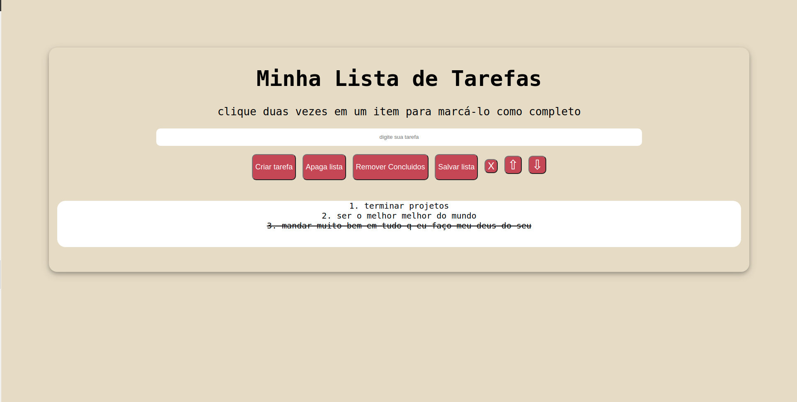
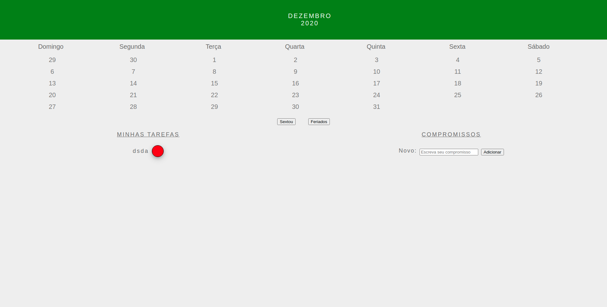
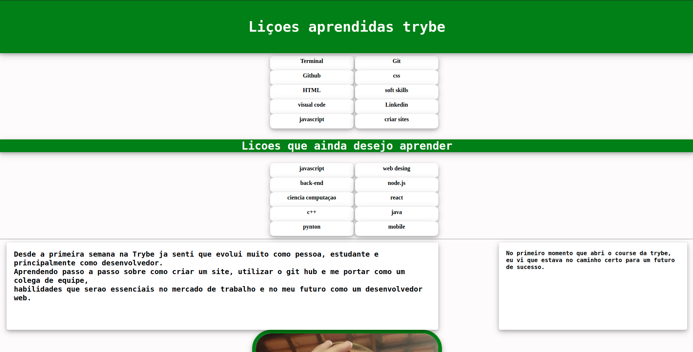
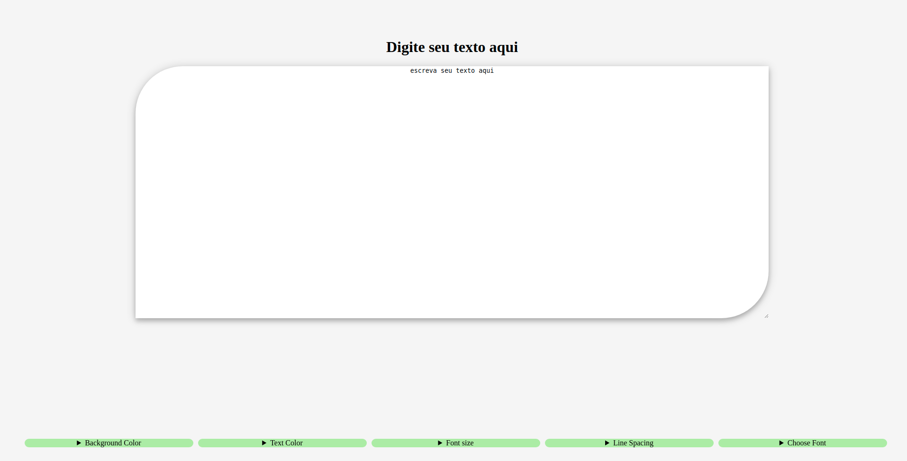
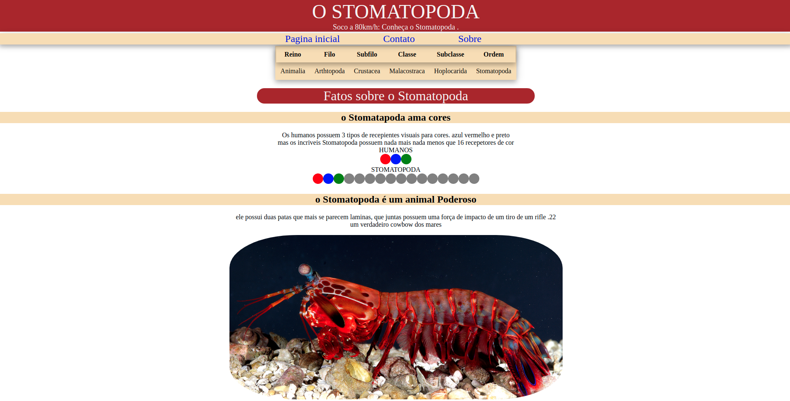
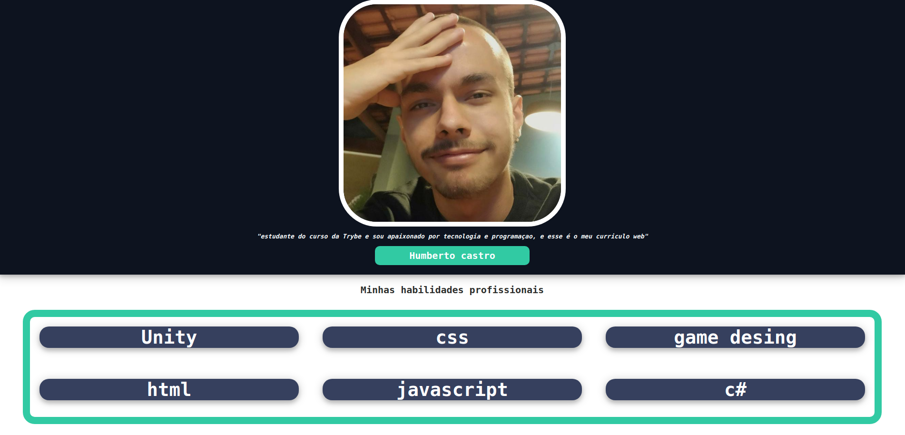
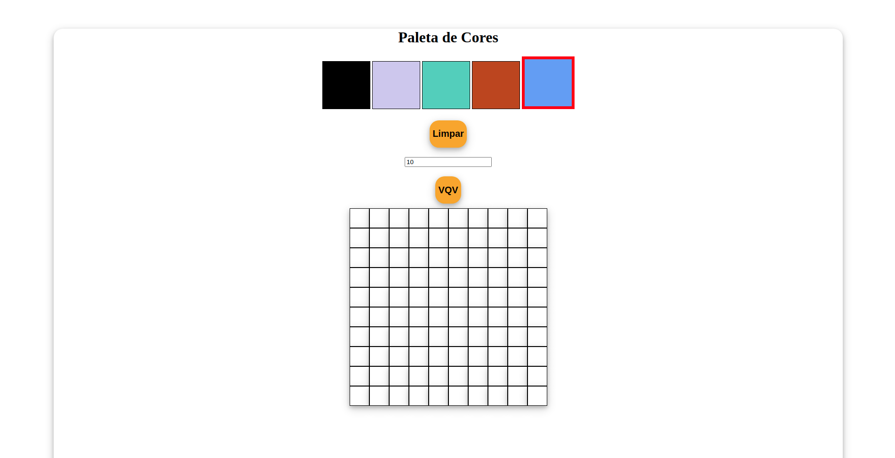
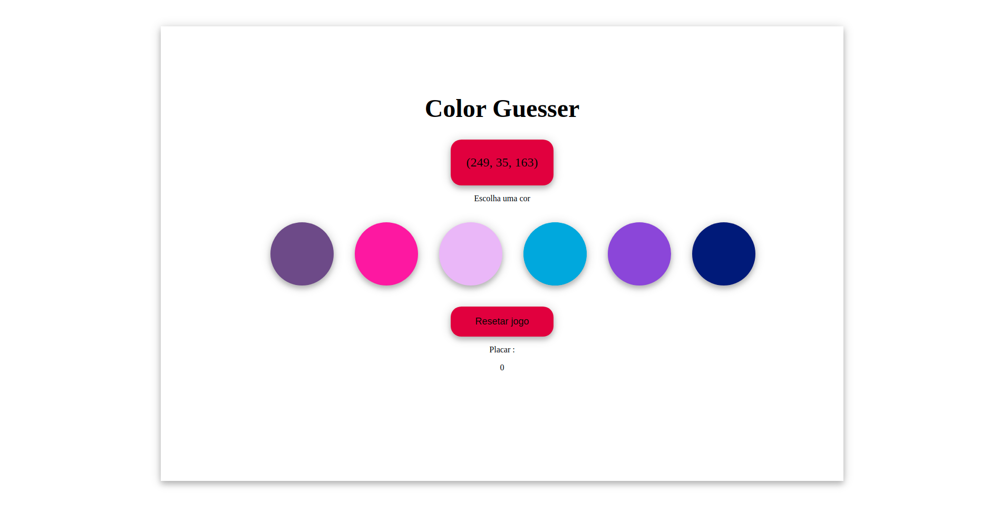

"estudante do curso da Trybe e sou apaixonado por tecnologia e programaçao, e esse é o meu curriculo web"
Humberto castro
"estudante do curso da Trybe e sou apaixonado por tecnologia e programaçao, e esse é o meu curriculo web"
Humberto castroMinhas habilidades profissionais
"site criado para mostrar um uso completo de scripts e acesso ao local storage"
"site criado para mostrar o uso de JavaScript"
"site criado para mostrar as habilidades e liçoes aprendidas durante as primeiras 2 semanas da trybe"
"site criado para mostrar o uso de praticas de armazenamento web"
"Site criado para mostrar o uso do html semantico para acessibilidade e criaçao de tags coesas"
"site criado para apresenter o Portifolio de Humberto castro, e seus projetos desenvolvidos durante o periodo de estudos no curso Trybe"
"Site interativo, com a funcionalidade de escolher e pintar um grid de elementos definido pelo usuario"
"site interativo, um jogo onde o usuario deve tentar adivinhar qual é a cor representada pela msg na tela"
